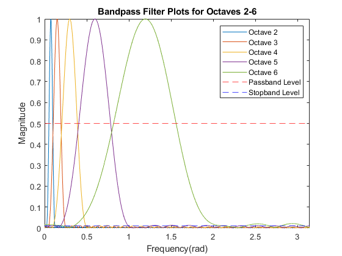
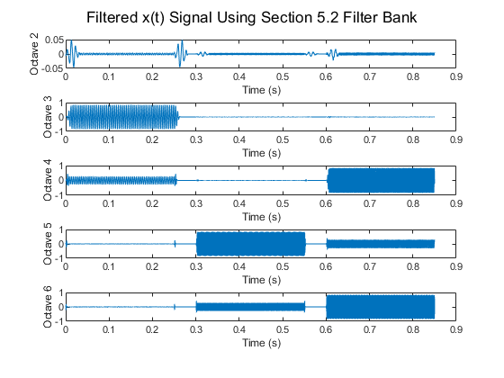
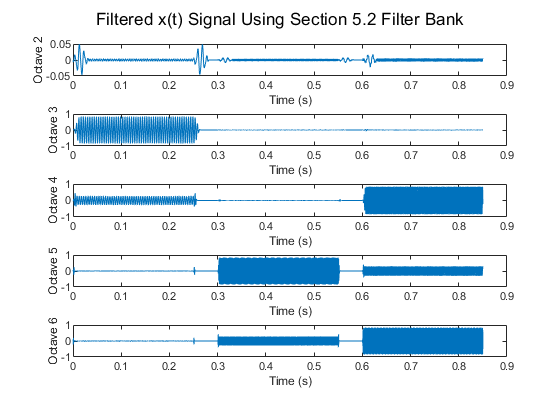

% Section 5.3: Piano Octave Decoding % Maili Vu (u1169721) % frequency = 2^((n-49)/12) * 440 Hz % where 'n' = key # clear; close all; clc; % Pulling information from Sections 5.1 & 5.2 % addpath('LabP14_Exercise5.2\'); % Get the filter coefficients from 5.2 % Q512; run("main5_2.m"); % Run section 5.1 and 5.2 for BP Filters % 5.3 (a) generate x(t) using sampling rate fs = 8000 Hz fs = 8000; t = 0:1/fs:0.85; length = size(t,2); xx = zeros(1,length); % x(t) = cos(2*pi*220*t) for 0s <= t < 0.25s % x(t) = cos(2*pi*880*t) for 0.3s <= t < 0.55s % x(t) = cos(2*pi*440*t) + cos(2*pi*1760*t) for 0.6s <= t < 0.85s for i = 1:length if i < (1 + 0.25*fs) xx(i) = cos(2*pi * 220 * t(i)); elseif i > (1 + 0.3*fs) && i < (1 + 0.55*fs) xx(i) = cos(2*pi * 880 * t(i)); elseif i > (1 + 0.6*fs) && i < (1 + 0.85*fs) xx(i) = cos(2*pi * 440 * t(i)) + cos(2*pi * 1760 * t(i)); end end figure; plot(t, xx); sgtitle('Piano Frequency Sinusoidal Signal'); xlabel('Time (s)'); ylabel('x(t)'); grid on; hold off; % 5.3 (b) Filter xx through five filters % Put coefficients through each filter from 5.2 xx_2 = filter(hoct2, 1, xx); xx_3 = filter(hoct3, 1, xx); xx_4 = filter(hoct4, 1, xx); xx_5 = filter(hoct5, 1, xx); xx_6 = filter(hoct6, 1, xx); % 5.3 (c) Make 5 subplots in one figure using subplot(5,1,n) figure; subplot(5,1,1); sgtitle('Filtered x(t) Signal Using Section 5.2 Filter Bank'); plot(t, xx_2); ylabel('Octave 2'); xlabel('Time (s)'); subplot(5,1,2); plot(t, xx_3); ylabel('Octave 3'); xlabel('Time (s)'); subplot(5,1,3); plot(t, xx_4); ylabel('Octave 4'); xlabel('Time (s)'); subplot(5,1,4); plot(t, xx_5); ylabel('Octave 5'); xlabel('Time (s)'); subplot(5,1,5); plot(t, xx_6); ylabel('Octave 6'); xlabel('Time (s)'); % 5.3 (d) Validate that output signals have correct magnitude & phase % After observing the 5.3 (c) figure and confirming the output signals have % the correct magnitude and phase, the following signals are found to be in % the designated octaves: % 220 Hz: octave 3 % 880 Hz: octave 5 % 440 Hz: octave 4 % 1760 Hz: octave 6 % 5.3 (e) Transient effects at transitions % Observing the 5.3 (c) figure, the transient effect of each FIR filter % is directly proportional to the value of L, where the transient grows % larger as L increases and vice versa transient_1 = (L2-1)/fs; transient_2 = (L3-1)/fs; transient_3 = (L4-1)/fs; transient_4 = (L5-1)/fs; transient_5 = (L6-1)/fs;
 
